Operasional Lapangan
Dirancang untuk kelancaran program Outbound & Experiential Training.
Lokasi kegiatan di pegunungan, camping ground, hutan pinus, atau resort luas sering kali memiliki area blank spot. Growth Internal memastikan PIC, Basecamp, Fasilitator Pos, dan Logistik selalu terhubung.
Rotasi Pos & Games
Fasilitator melaporkan kesiapan pos (Standby / Butuh Backup / Kendala), dan PIC mengirim Instruksi rotasi serentak ke seluruh HP Tim.
High Rope & Area Luas
Kompas dan peta offline menampilkan posisi tiap anggota Tim. Jika satu pos membutuhkan supporting/backup segera, tombol Prioritas memberi tahu seluruh Tim.
Briefing & Evaluasi
Kirim foto kesiapan properti games atau video singkat kondisi lapangan tanpa membutuhkan paket data maupun sinyal operator.
Fitur
Cepat, praktis, dan siap di lapangan.
Dirancang untuk kemudahan fasilitasi di lapangan: tombol besar, sedikit langkah, dan tetap aktif saat HP disimpan di saku.
Komunikasi
- Tahan untuk bicara
- Walkie-talkie (HT digital) ke seluruh Tim. Nama dan foto pembicara muncul di layar semua anggota Tim.
- Mode telepon
- Suara dua arah terus-menerus dengan peredam gema dan derau bawaan HP.
- Chat Tim
- Pesan teks ke seluruh anggota Tim yang terhubung.
- Kirim foto
- Foto dari kamera atau galeri, dikecilkan otomatis supaya cepat terkirim untuk dokumentasi dan cek kesiapan pos.
- Kirim klip video
- Rekaman pendek maksimal 15 detik dengan kualitas hemat. Dikirim bertahap tanpa mengganggu jalur suara.
- Instruksi
- Kartu pengumuman kuning yang berbunyi di semua HP Tim untuk info rotasi pos, briefing, atau perubahan rundown dari PIC / Basecamp.
Koordinasi Pos
- Prioritas
- Dering perhatian dan getar di semua HP Tim, lengkap dengan jarak dan arah ke pengirim saat membutuhkan supporting/backup segera.
- Prioritas + SMS
- Jika pos berada di luar jangkauan Wi‑Fi Direct tetapi ada sinyal seluler, SMS berisi koordinat lokasi dan baterai disiapkan untuk maksimal 3 nomor PIC / Basecamp.
- Peta offline
- Unduh peta area sekitar (±3 km) selagi ada internet sebelum keberangkatan. Peta dan titik posisi tiap anggota Tim tampil tanpa internet.
- Kompas Tim
- Radar yang menunjukkan arah dan jarak setiap anggota Tim di area venue. GPS tetap bekerja tanpa internet.
- Status dan baterai
- Standby, Butuh Backup, atau Kendala, tampil di bawah foto setiap anggota Tim bersama sisa baterai.
- Jembatan (Relay)
- Satu HP di titik tengah bisa menjadi jembatan (bridge), sehingga pos yang lebih jauh tetap tersambung ke Basecamp.
- Peringatan terputus
- Jika ada HP anggota Tim yang keluar jangkauan atau mati, seluruh Tim tahu dalam sekitar 10 detik.
Tampilan
Seperti ini di HP Tim.
Dirender langsung dari kode aplikasi dengan simulasi skenario Outbound & Training Tim Growth Indonesia.
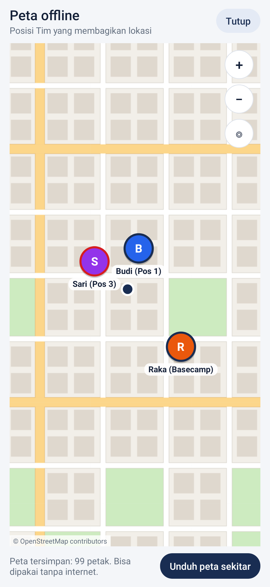
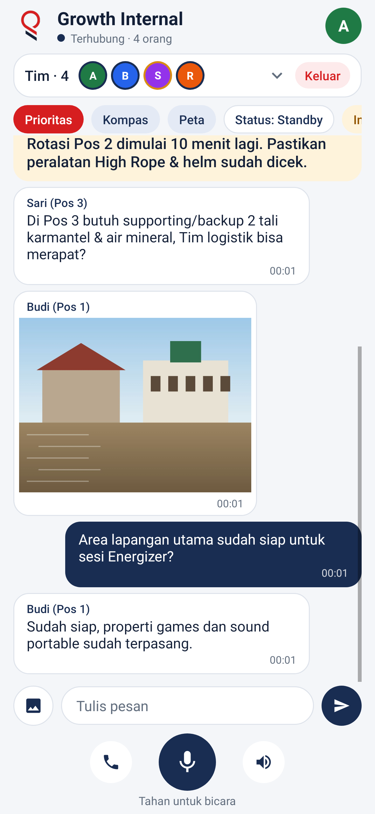
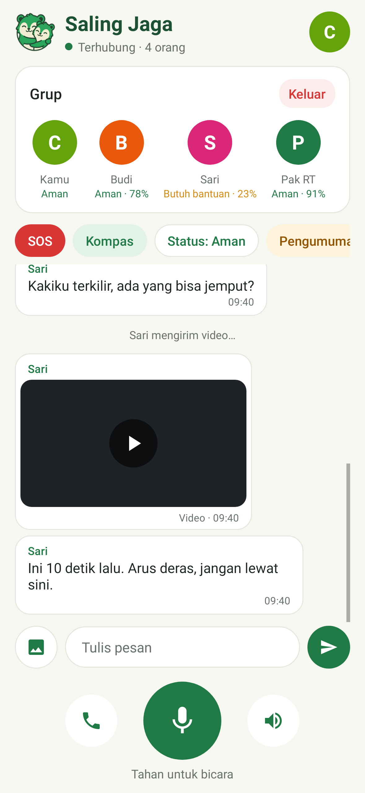
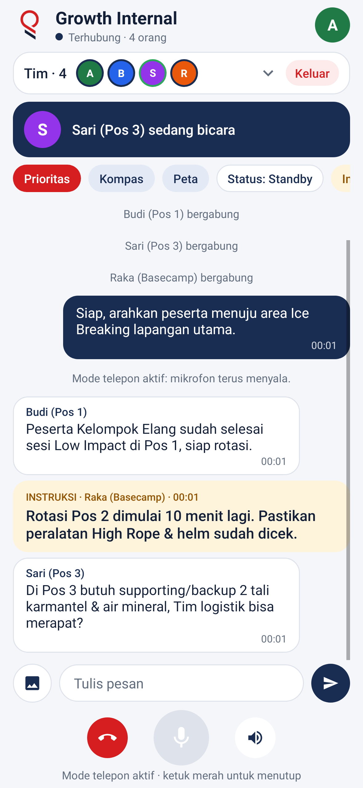
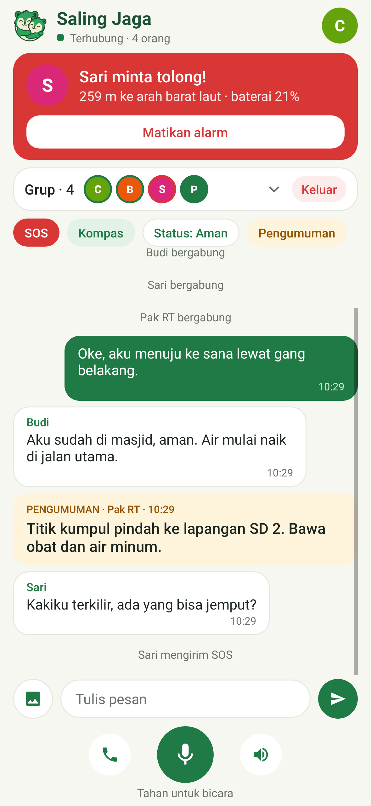
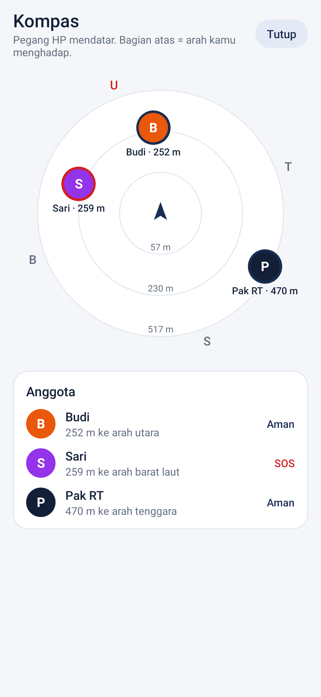
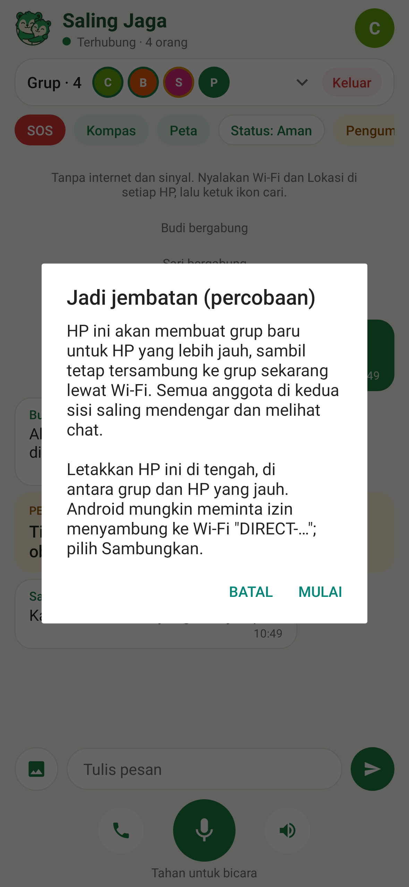
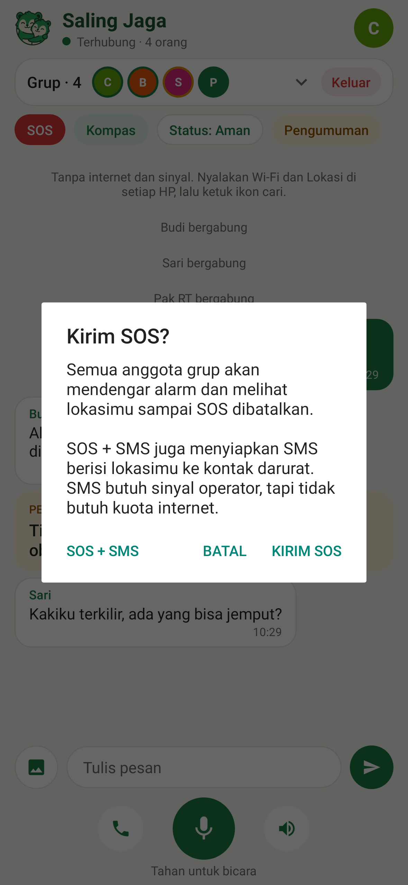
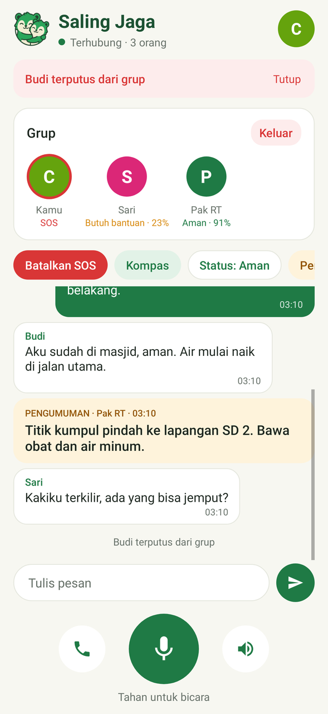
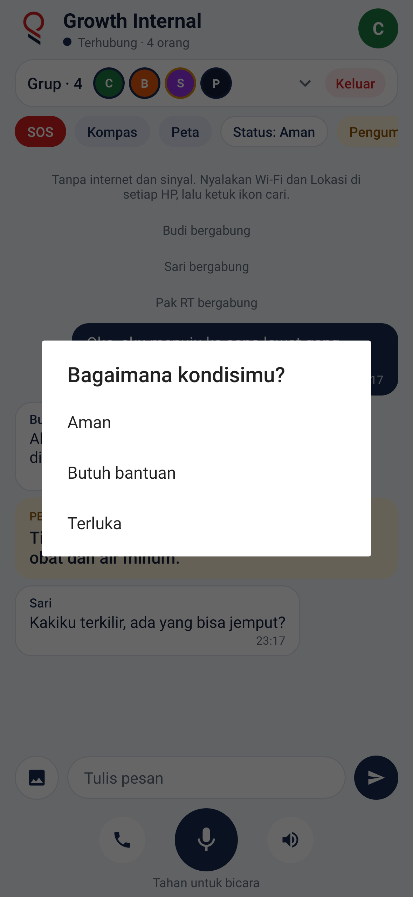
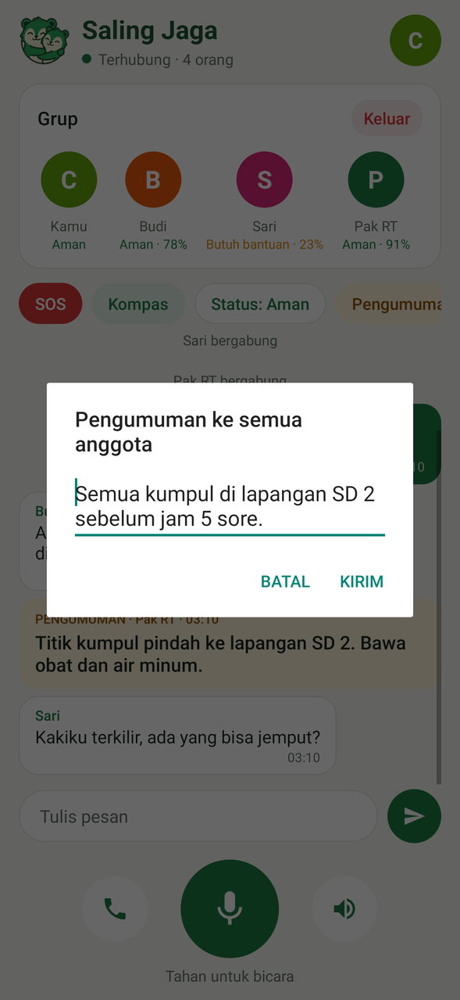
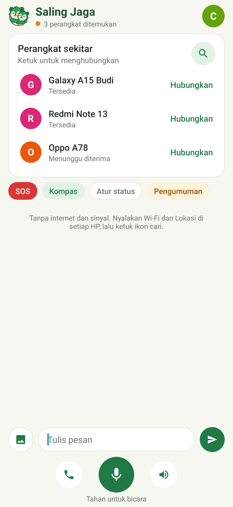
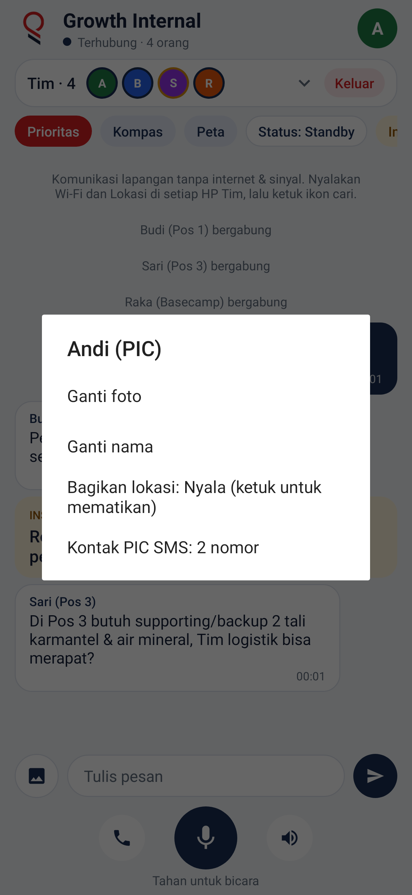
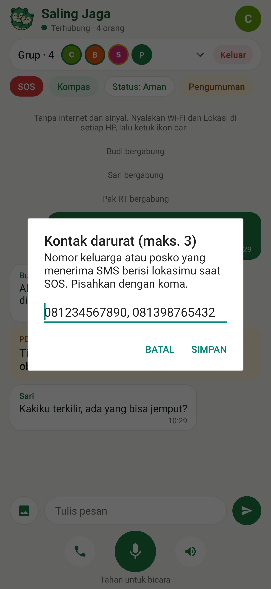
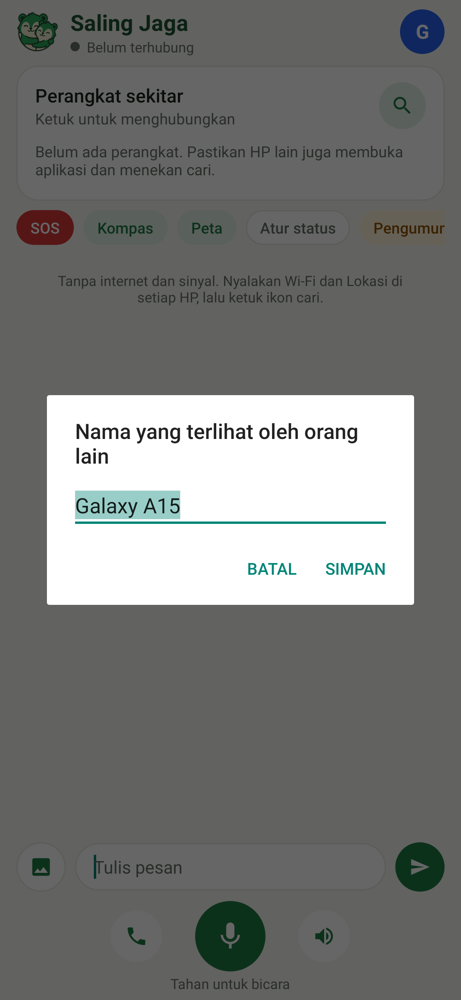
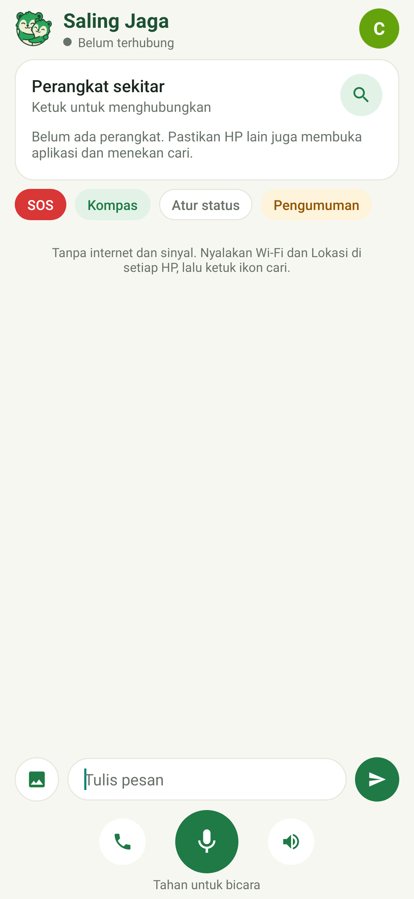
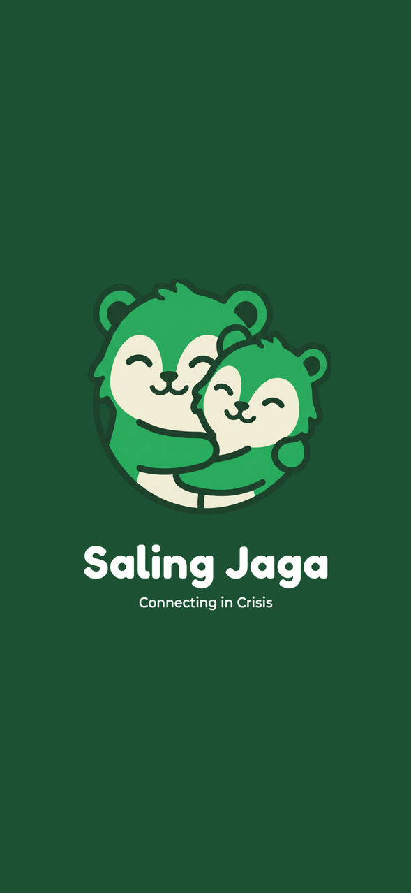